Shadow fight 2 especial edition
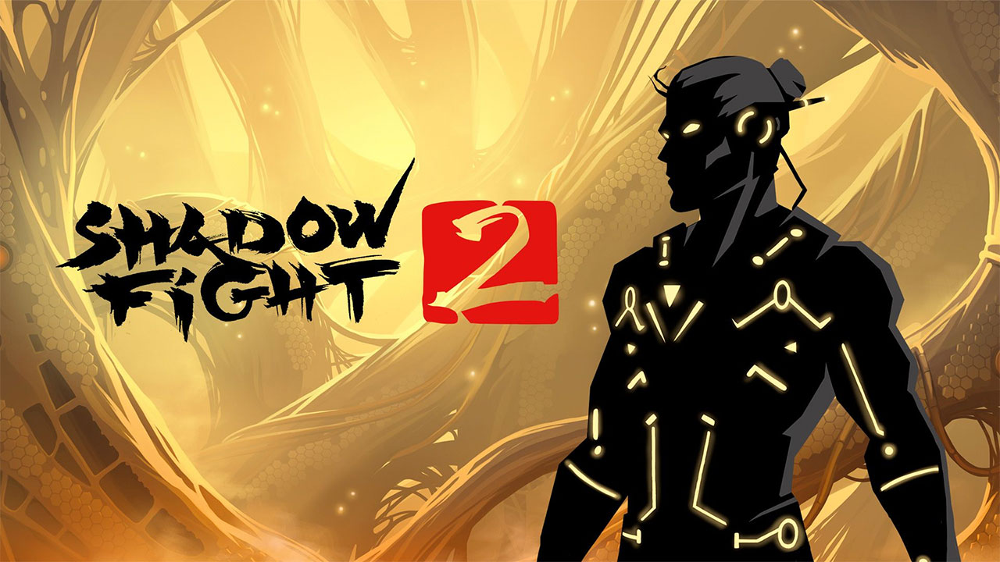Shadow Fight é um RPG de luta publicado pela Nekki, com sede na Rússia, e desenvolvido pela Banzai.Games. É a segunda parcela da série Shadow Fight e foi lançada em 22 de outubro de 2013. O jogo completo foi lançado mundialmente em 1º de maio de 2014, para os sistemas operacionais Android e iOS.
- Modificações
- 💰Dinheiro infinito
- 💎Gemas infinitas
Subway Surfers
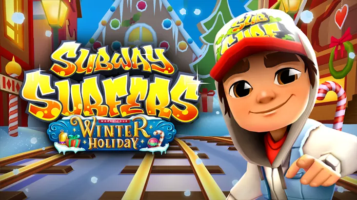Subway Surfers é um jogo eletrônico de corrida interminável co-desenvolvido pela Kiloo Games, uma empresa privada com sede na Dinamarca e pela Sybo Games. Lançado em 2012, o tema do jogo é "World Tour", acontecendo em lugares como: Nova York, Rio de Janeiro, Roma, Sydney, Tóquio, Miami, Paris Etc..
- Sem modificações
True skate MOD

True Skate é um jogo de esporte em que você comanda um skate e deve realizar diversas manobras radicais em pistas do mundo todo. O game proporciona uma experiência bastante realista e deverá agradar os fãs do gênero.
- Modificações
- 💰Compras no Game liberadas
Limbo android
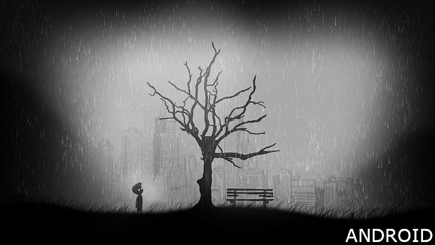LIMBO é um game para Android, iOS, Mac e Windows que conta a história de um menino perdido que está em busca de sua irmã. A situação fica ainda mais complicada quando o protagonista entra no Limbo, um lugar sombrio e cheio de perigos.
- Sem modficações
Geometry dash
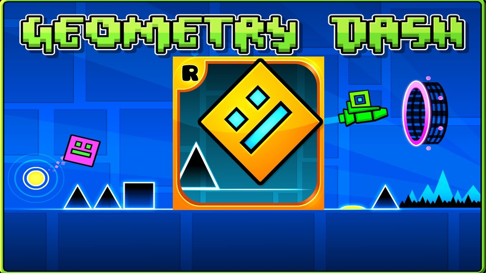Geometry Dash é um jogo eletrônico disponível para celulares e PC's, desenvolvido pelo programador sueco Robert Topala, e publicado em 2013 por sua própria empresa, RobTop Games.
- Modificações
- Sem modificações
Terraria
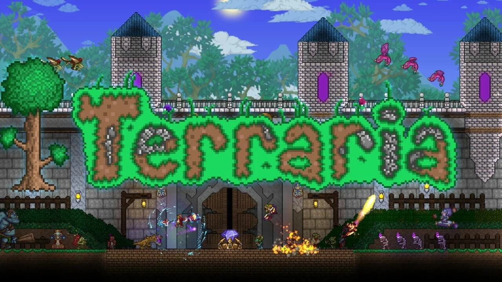Terraria é um jogo eletrônico RPG de ação-aventura independente produzido pela desenvolvedora de jogos Re-Logic. Possui como características a exploração, artesanato, construção de estruturas e combate a monstros perigosos em um mundo 2D gerado proceduralmente.
- Modificações
- Sem modificações
Darks Souls prepare to die edition
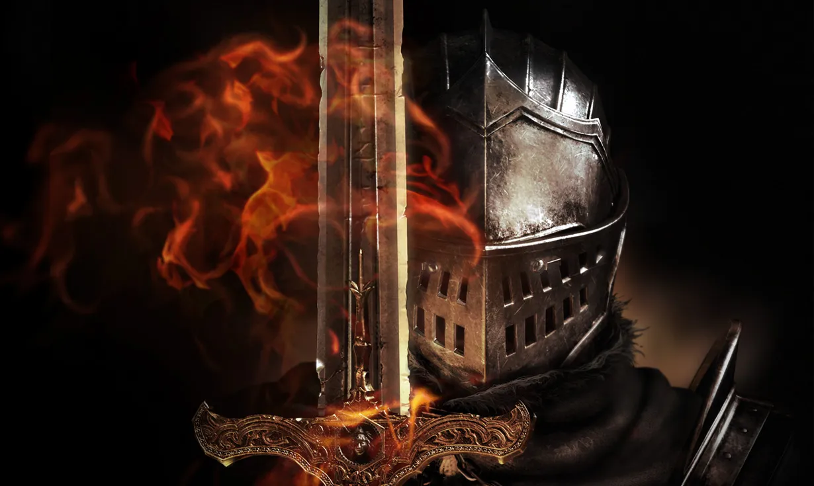Dark Souls se passa no mundo caótico onde o Dark Ring, um sinal amaldiçoado dos mortos-vivos, apareceu. Para remover a maldição, o personagem principal faz uma peregrinação a Lordran, onde os reis estão consagrados. Este RPG de ação concentra-se no entretenimento fundamental de um RPG, como a exploração tensa, a descoberta e o medo de encontrar monstros. Os jogadores ganharão uma grande sensação de realização quando conseguirem progredir no jogo.
- Modificações
- Sem modificações
Darks Souls Remastered

Dark Souls Em Dark Souls assuma o papel do Cavaleiro Negro e se aventure nas terras médias lutando contra deuses e criaturas poderosas para quebrar uma maldição.
- Modificações
- Sem modificações
Spider-Man Resmastered
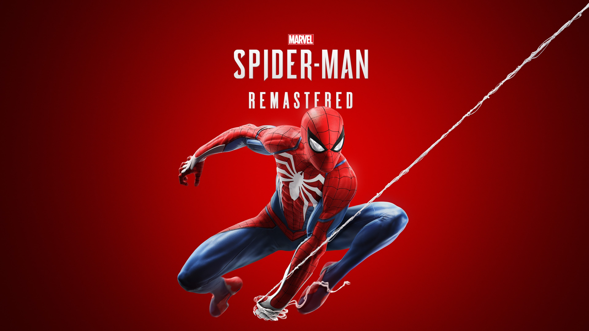Em Marvel's Spider-Man Remastered, os mundos de Peter Parker e Spider-Man entram em conflito em uma história original cheia de ação. Jogue como um Peter Parker experiente que combate as maiores ameaças do crime e vilões icônicos na Nova York da Marvel. Balance por bairros vibrantes e derrote vilões com abates épicos.
- Sem modificações
Spider-Man Miles Morales
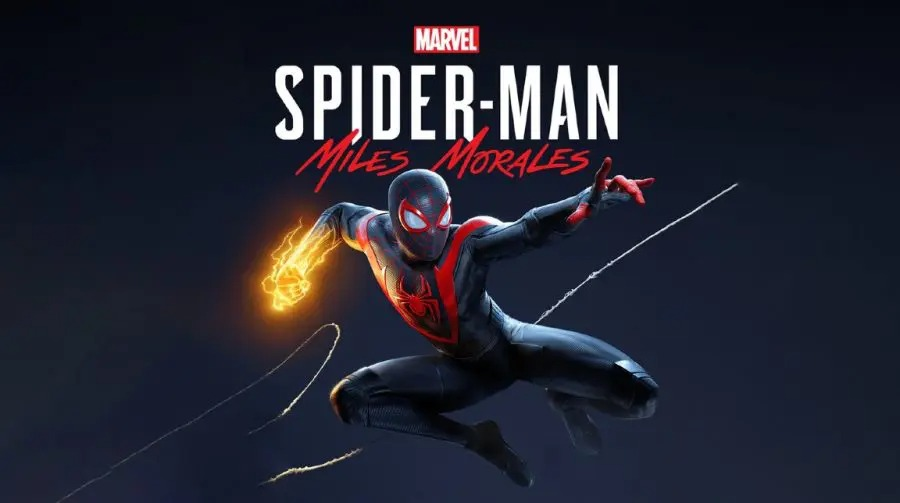Uma guerra pelo controle da Nova York da Marvel estourou entre uma empresa de energia desonesta e um exército criminoso de alta tecnologia. Com o seu novo lar ameaçado pelo conflito, Miles deve descobrir o preço de se tornar um herói e decidir o que sacrificar pelo bem maior.
- Sem modificações
Horizon Zero Dawn
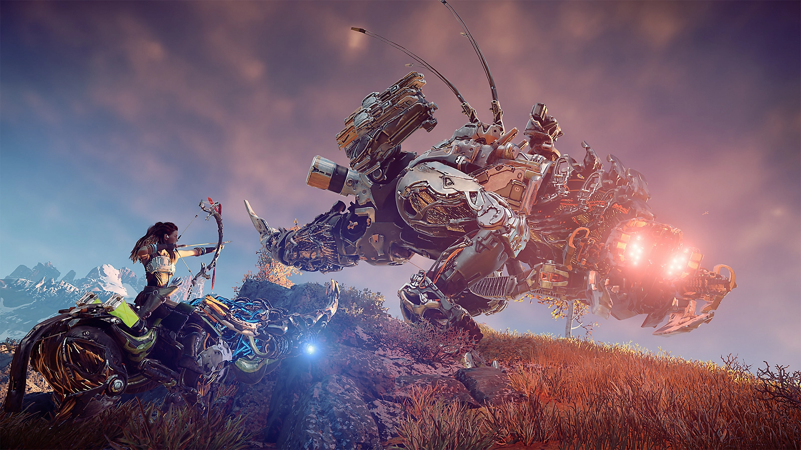Em uma era na qual máquinas vagam livremente e a humanidade deixou de ser a espécie dominante, uma jovem caçadora chamada Aloy inicia uma jornada na qual desvendará o seu destino. Em um mundo pós-apocalíptico exuberante, onde a natureza retomou as ruínas de uma civilização esquecida, pequenos grupos de pessoas vivem em tribos primitivas de caçadores e coletores. O domínio delas sobre esse novo ambiente selvagem foi usurpado pelas máquinas, terríveis criaturas mecânicas de origem desconhecida.
- Sem modificações
Detroit Become Human
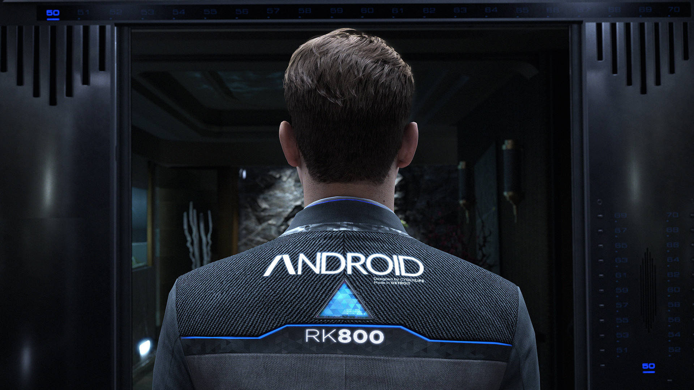Become Human coloca o destino da humanidade e dos androides nas tuas mãos, levando-te para um futuro próximo onde as máquinas tornaram-se mais inteligentes que os humanos. Cada escolha que fazes afeta o desfecho do jogo,
- Sem modificações
The Last of us 1

Em uma civilização devastada, em que infectados e sobreviventes veteranos estão à solta, Joel, um protagonista abatido, é contratado para tirar uma garota de 14 anos, Ellie, de uma zona de quarentena militar. No entanto, o que começa como um pequeno serviço se transforma em uma jornada brutal através do país.
- Sem modificações
Hogwarts legacy
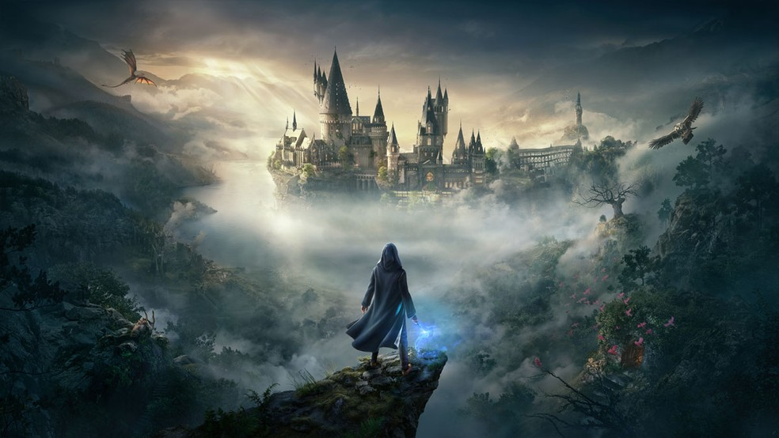Em resumo, Hogwarts Legacy é um jogo de RPG de ação que oferece aos jogadores uma oportunidade única de explorar o mundo mágico de Harry Potter, enquanto vivenciam a vida como um estudante de Hogwarts, aprendendo novos feitiços, enfrentando desafios e interagindo com personagens icônicos do universo de Harry Potter.
- Sem modificações
Need for Speed Underground 2 - PC

NFS2 Need For Speed: Underground 2 é um jogo eletrônico de corrida multiplataforma e é a oitava edição da série Need for Speed, sendo a sequência direta de Need for Speed: Underground.
- Sem modificações
Limbo PC
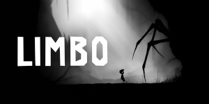LIMBO é um game para Android, iOS, Mac e Windows que conta a história de um menino perdido que está em busca de sua irmã. A situação fica ainda mais complicada quando o protagonista entra no Limbo, um lugar sombrio e cheio de perigos.
- Sem modficações